Страницы авторов "Тёмного леса"
Литературный Кисловодск и окрестности
Пишите нам! temnyjles@narod.ru
Удивительно гармоничные пропорции и готический облик ансамбля репнинской усадьбы Воронцово позволяют увидеть в авторе их проекта незаурядного архитектора. Недаром разные исследователи приписывали его создание лучшим зодчим той эпохи, Баженову или Казакову. Они проектировали дворцы расположенного южнее Воронцова в царском имении Коньково-Троицкое, и, выезжая для работы из Москвы, не могли не миновать Воронцова. Иногда автором ансамбля в Воронцове считают Джакомо Кваренги.
| 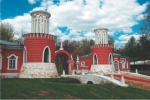 | Парадный въезд усадьбы Воронцово. Кордегардии с башнями въездов и небольшой однопролетный мост |
Едва ли когда-нибудь задача установления авторства ансамбля парадного въезда в Воронцово будет документально решена, поскольку Воронцовский усадебный архив времён Репниных считается погибшим ещё в 1812 году. Во всяком случае, зная, как был устроен строительный процесс в ту эпоху, приписывать крупным зодчим работу в Воронцове безосновательно.
Официально ансамбль в Воронцове не имеет точной даты возникновения. Одно время его датировали 1770-ми годами. Этим объясняются попытки связать его сооружение с торжествами по случаю празднования Кючук-Кайнарджийского мира с Османской империей, заключённого князем Николаем Репниным в 1775 году. Можно говорить лишь о том, что увеселительные павильоны, сооружённые для этих торжеств на Ходынском поле, впервые в России ярко и красочно продемонстрировали возможности готической архитектуры и стали образцом для подобных сооружений так же, как и выполненные в стилистике императорские резиденции в Царицыне и Петровском дворце.
| 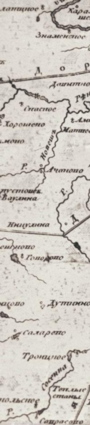 | Фрагмент карты Москвы с окрестностями 1763 г. |
Современная датировка рождения усадьбы, 1780-е годы, весьма приблизительная, так как никаких документов о его создании обнаружить не удалось. Кладка стен кордегардий отличается от кладки башен, что позволяет предположить, что ансамбль имеет два строительных периода, по времени расходящихся друг от друга. Очевидно, к третьему строительному периоду относится сооружение триумфальной арки с обелисками. По нашему мнению, все сооружения ансамбля относятся к 1790-м годам, периоду, когда Репнин жил в Воронцове и у него появилось время для строительных работ в усадьбе.
| 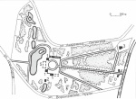 | План-чертеж усадьбы Воронцово 1 - флигель; 2 - палаты; 3 - Троицкая церковь; 4 - караульни с башнями въездов; 5 - место главного дома. |
Изначальный замысел неизвестного зодчего был гораздо масштабнее дошедшего до нас комплекса. Наличие рва предполагает и наличие валов вдоль него, сооружённых из вынутой при этих работах земли. Логично предположить, что на валах, скорее всего, могли стоять невысокие готические стены, которые соединяли их с крупными восьмигранными башенными павильонами. До настоящего времени дошёл только северный павильон, позднее ставший церковью Святой Троицы.
| 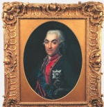 | Портрет фельдмаршала князя Н.В. Репнина. Д.Г. Левицкий, 1792 г. |
Трактовка павильонов как единого целого вместе с башнями и кордегардиями даёт возможность считать все эти постройки одним ансамблем. Ансамбль создаёт образ усадьбы Воронцово со стороны Калужской дороги как увеселительной "турецкой крепости" - эффектной романтической театральной декорации с крепостными башнями и триумфальной аркой, по сути, это - выставление напоказ для всех проезжающих по Калужской дороге, что владельцем Воронцова был герой русско-турецких войн фельдмаршал Репнин.
| 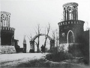 | Ансамбль парадного въезда. Фото 1935 года |
Подобные мемориально-триумфальные <турецкие крепости> сооружали в своих подмосковных усадьбах и другие отличившиеся военачальники. Наиболее известная из них Михалково графа П.И. Панина, чей ансамбль сохранился почти полностью. От крепостей в усадьбах Васильевское графа В.М. Долгорукова-Крымского (более известна по позднему названию Мамонова дача) и Троицкое-Кайнарджи графа П.А. Румянцева-Задунайского ничего не сохранилось. Как правило, такие сооружения имитировали реальные турецкие крепости, взятые под руководством этих полководцев, хотя, безусловно, не являлись их копиями, а сооружались по мотивам. Применительно к Воронцову это, безусловно, Мачин, за бой под которым в 1791 году Репнин получил орден Георгия 1-й степени - высшую военную награду страны. К сожалению, после смерти владельца значение ансамбля со временем было забыто, а снос одного из павильонов и превращение другого в церковь, разрушение рва, вала и стен сильно обеднили его. В результате крепость воспринималась исследователями лишь как "парадный въезд".
| 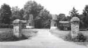 | Ансамбль парадного въезда. Фото 1982 года |
Есть основание полагать, что до Отечественной войны 1812 года стены на валу существовали, и это обусловило выбор именно усадьбы Воронцово, а не какого-то другого места для работ Франца Леппиха по строительству воздушного шара. Ров с валами и стенами со стороны Калужской дороги препятствовали свободному проходу на территорию любопытным. "Народ тогда толпами ходил из Москвы, на расстояние семи вёрст, к тому месту, где готовился шар. Это было на уединённой даче, окружённой забором, куда внутрь никого не пускали, но народ, возвращаясь домой, рассказывал, что видел своими глазами, как готовился шар на верную гибель врага, и тем довольствовался", - писал А.А. Аракчеев.
| 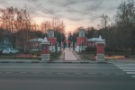 | Вид на кордегардии (караульни) со стороны ул. Архитектора Власова |
| 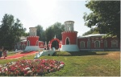 | 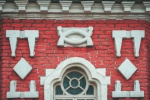 |
Парадный въезд в бывшую подмосковную усадьбу Воронцово или, как её называют, Воронцовский парк выходит на улицу Архитектора Власова. Это бывший участок исторической Калужской дороги, известной ещё с конца XIV века. Псевдоготический ансамбль въезда является самой эффектной частью усадьбы. Он был оформлен при владельце усадьбы генерал-фельдмаршале князе Николае Васильевиче Репнине (1734-1801), видном военачальнике и дипломате, последнем потомке угасавшего рода {*}. Две симметрично поставленные круглые двухъярусные башни с примыкающими к ним одноэтажными кордегардиями - караульными помещениями. Удивительно пластичные "красиво нарисованные" башни имеют стилистическое сходство с башнями Большого моста в Царицыне, сооружённого по проекту архитектора Баженова. Возможно, первоначально они имели декоративные завершения: зубцы, или пинакли. Контрастное красно-белое цветовое решение башен подчёркнуто мощными "крепостными" белокаменными цоколями. Кордегардии для караула при воротах - небольшие скромные домики с трапециевидными ризалитами. Формы их окон также прямое заимствование из Царицына. Над окнами ризалитов помещены белокаменные вставки.
Между кордегардиями стоит воссозданная в 2007 году кирпичная арка, украшенная тремя обелисками, - наиболее лаконичный и характерный памятник ратным победителям. Арка создаёт более стремительную перспективу въезда в усадьбу, акцентируя её главную композиционную ось, вызывая в памяти въезд в Петровский подъездной дворец работы Матвея Казакова. На наш взгляд, арка хотя и относится к 1790-м годам, сооружена не одновременно с башнями и кордегардиями, а чуть позже, видимо, в честь значимого события в жизни владельца усадьбы. Металлические стяги, выступающие из нижних частей башен, показывают, что первоначально ворота, которые при необходимости перекрывали проезд в усадьбу, находились между ними. Сооружение арки со своими воротами сделало их бессмысленными, поэтому они и были ликвидированы. Находящиеся по обеим сторонам от арки обелиски, увенчанные шарами на остриях, - ещё одна отсылка к военным победам Репнина.
Первоначально обелиски и башни соединяли небольшие полукруглые кирпичные ограды, в верхних частях которых находились металлические решётки. Воссозданные при реставрации ограды не имеют решёток и, увы, не соединены с башнями, оставляя промежутки между ними. В результате арка и обелиски превратились в самостоятельное отдельно стоящее сооружение. Со временем белокаменный свод арки обрушился. Она видна на обнаруженной нами фотографии 1944 года из собрания историка Александра Спивака и на обмерах, сделанных студентами МАРХИ в 1946 году. Но в конце 1980-х годов в ходе реставрационных работ, проводившихся в усадьбе, её разобрали. Лишь в 2007 году арка с калитками и обелиски с оградой были воссозданы, правда, уже из кирпича.
Неотъемлемой частью ансамбля является небольшой однопролётный мост через ров, некогда окружавший усадьбу со стороны Старой Калужской дороги. Мост был сооружён одновременно с башнями и кордегардиями. Но до недавнего времени он был скрыт под толщей земли и асфальта. Только в 2006-2007 годах мост был раскопан и реставрирован. Очень эффектно чередование белого камня и большемерного кирпича в арке моста, что прекрасно увязывается с колористическим оформлением башен. Перед мостом совсем близко у проезжей части улицы стоят два крупных кирпичных пилона.
Согласно проведённым в 1920-е годы исследованиям Общества изучения русской усадьбы, церковь в Воронцове была устроена в садовом павильоне. Это название закрепилось в литературе, хотя применительно к данному зданию слово павильон не более чем метафора. Как правило, павильон - место уединения и веселья - должен был находиться далеко от больших дорог. Явно не около оживлённой Старой Калужской дороги.
Не подтверждается и местная легенда о том, что эта постройка первоначально якобы являлась масонским храмом. Таких зданий в Воронцове было два. Аналогичная постройка, находившаяся на том же расстоянии к югу от парадных ворот и показанная в ряде проектов 1820-1840-х годов, не сохранилась. При необходимости строительства масонского здания на территории обширного Воронцова, несомненно, было бы выбрано более уединённое место. Вместе с тем эта легенда достаточно живуча, поскольку сам Репнин был "мастером стула" - председателем в масонской иерархии. А в современном искусствоведении существует порочная тенденция интерпретировать как масонские храмы любые усадебные постройки непонятного назначения, особенно имеющие неординарные конфигурации.
План церкви очень похож на планы кордегардий, за исключением криволинейной формы центральной части западного фасада. Храмы с таким объёмным решением неизвестны в практике отечественного зодчества. По данным натурного обследования памятника было установлено, что все существующие части здания выполнены из одного и того же вида кирпича, что подтвердилось в ходе ремонтно-реставрационных работ начала 1990-х годов. Значит, конфигурация здания в изначальном виде была почти аналогична современной, за исключением недавно воссозданной колокольни 1838 года и апсиды начала 1990-х годов. Об этом говорят и выложенные в кирпиче рамочные лопатки и увенчанные фронтонами наличники, обнаруживающие стилистическую близость этого здания к кордегардиям. Не исключено, что его верх имел примерно такое же завершение, как у башен парадного въезда.
Здание было переделано из жилого в церковь Троицы, давшую Воронцову ещё одно название - Троицкое в 1806-1807 годах. При изменении функций здания его псевдоготическое декоративное оформление было заменено классицистическим. Видимо, в то же время были переделаны оконные проёмы, ставшие арочными и получившие массивные наличники.
| 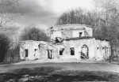 | Церковь Троицы Живоначальной в Воронцове, 1990 г. |
На фото хорошо выявляется гражданская сущность первоначальной постройки
Перестройку павильона в церковь финансировали внук Н.В. Репнина князь Николай Григорьевич Репнин и его жена, Варвара Алексеевна. Это показатель их связи с Воронцовым и частого пребывания в усадьбе. Н.Г. Репнин внёс в сохранную казну Воспитательного дома 15 тысяч рублей, на проценты с которых содержалась церковь, так как количество крестьян в новом приходе было недостаточным для её устройства.
Во время Отечественной войны 1812 года церковь была ограблена французами: "с двух Евангелий оклад снят и доски разбиты; крестов, дарохранительницы, сосудов, блюдец не находится; ризы, пелены, поручи и подризники, принадлежащие к сей церкви, унесены; с разных образов венцы и оклады сняты; плащаница цела, но украшение с неё сорвано и унесено. Вся церковь, как внутри, так и снаружи и с колокольнею цела и не повреждена".
| 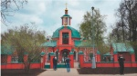 |
Только в 1816 году, то есть гораздо позже остальных пострадавших подмосковных храмов, её привели в порядок и освятили. Возможно, тогда в церковь было помещено русское знамя начала XVII века с изображением Спаса, являвшееся фамильной реликвией Репниных. В мае 1883 года оно было передано из Воронцова в Оружейную Палату Московского Кремля для пополнения коллекции знамён. В 1837 году рядом с церковью было устроено кладбище. Это делает маловероятной местную легенду о том, что около неё находится могила французов, якобы погибших в Воронцове в 1812 году. Кладбище впоследствии разрослось и занимало участок между церковью и ансамблем парадного въезда.
| 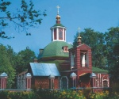 | Церковь Троицы современное состояние |
Следующий этап строительных работ относится к 1838 году. Тогда С.И. Муханов на свои средства реконструировал храм, пристроив к его центральному фасаду небольшую двухъярусную колокольню. Он заменил предыдущую, стоявшую особняком, и устроил в здании придел соименного ему святого - Сергия Радонежского. Возможно, её автором был московский губернский архитектор Д.Ф. Борисов, работавший в других подмосковных имениях Мухановых: Никольском-Здехове (Богородский уезд) и Воздвиженском (Дмитровский уезд).
Кордегардии стали в начале XIX века домами причта. К середине XIX века они обветшали. Местный священник А.И. Синайский в 1851 году в клировой ведомости писал, что каменные дома причта "приходят в ветхость так, что в зимнее время жить в них невозможно по холоду, принадлежности к оным деревянные так же ветхи".
После 1938 года церковь не функционировала. Официально она закрыта была только в 1944 году и передана под склад Воронцовскому сельпо. Тогда же храм был обезглавлен, убранство его интерьеров уничтожено, а колокольня разобрана.
После присоединения Воронцова к Москве здание церкви передали заводу игрушек "Кругозор". К 1976 году здание оказалось бесхозным и с каждым годом всё больше и больше разрушалось. Во всех помещениях были уничтожены столярные заполнения окон и дверей, перегородки и перекрытия, а стены утратили несущую способность. Церковь была восстановлена только в 1991-1995 годах.
После Октябрьского переворота в кордегардиях находились различные учреждения и организации, в 1930-х годах - Воронцовский сельсовет и чайная для проезжающих по Калужскому шоссе. После реставрации в 1970-е годы ансамбль парадного въезда долгое время никак не использовался и опять обветшал. В 1980-е годы Черёмушкинская районная организация ВООПИиК составила акт о разрушении части здания одной из кордегардий, которая была восстановлена в двухнедельный срок Черёмушкинским райсоветом. Только в конце 1990-х годов караульни и башни, к тому времени являвшиеся одним из элементов герба Юго-Западного округа, были отремонтированы.
Последняя реставрация башен и кордегардий была в 2006 году. Весь ансамбль парадного въезда и усадебные постройки были окрашены не в кирпично-красный, а в розовый цвет, придающий комплексу вид новодела. Тем не менее, даже в своём современном виде увеселительная "турецкая крепость" Воронцово производит неизгладимое впечатление. Остаётся лишь надеяться, что исследования и археологические работы будут продолжены, возможно, удастся воссоздать усадьбу в первоначальном виде.
| 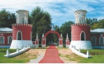 |
{*} Фельдмаршал князь Н.В. Репнин был последним в роде. Но специальным царским указом фамилия Репнин была присвоена его внуку Николаю Григорьевичу ВОлконскому.
Последнее изменение страницы 18 Sep 2018
{kind=link}
{kind=link}
{kind=link}
{kind=link}
{kind=link}
{kind=link}
{kind=link}
{kind=link}
{kind=link}
{kind=link}
{kind=link}
{kind=link}
{kind=link}